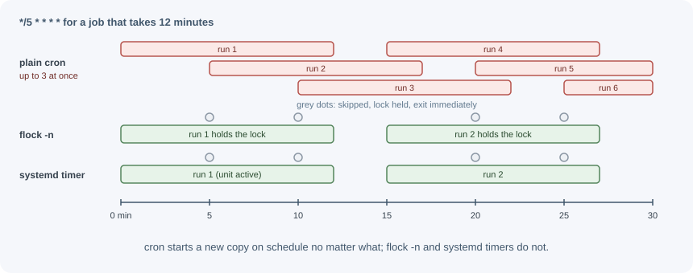

Scheduled Jobs and Log Rotation¶
Every production server runs work nobody triggers by hand: nightly
reports, database dumps, cleanup of expired sessions, certificate
renewal, and the rotation of the logs all of that produces. This lesson
covers the two schedulers on an Ubuntu server, cron and systemd timers:
cron's syntax and its classic traps (a minimal environment, PATH, the
% sign, time zones and daylight saving time, overlapping runs), timers
and why they are the better default, how to run a job exactly once when
the same server image runs three times, log rotation with logrotate,
journald's size limits, and how disk-full incidents happen and are
handled.
Scheduling inside the application (job queues such as BullMQ, Agenda, and delayed jobs) is covered in background jobs and scheduling, and Kubernetes CronJobs in stateful workloads and jobs. This lesson is about the operating system's schedulers.
Why it matters¶
Scheduled jobs fail quietly. A cron job whose output goes nowhere can
fail every night for months; nobody notices until the backup that was
never taken is needed. Jobs also fail in ways interactive commands
never do: a script that works in your shell cannot find node under
cron, a job scheduled at 02:30 runs twice or not at all on the night the
clocks change, and a job that usually takes 4 minutes takes 20 one day
and piles up behind itself.
Logs are the other slow-motion failure. Without rotation and limits, a single chatty process fills the disk, and a full disk takes down the database, the web server, and the logging that would have explained it. Both problems are cheap to prevent and expensive to discover in production.
Real-world usage¶
- systemd timers. The
systemd.timer
manual documents
Persistent=(catch up on runs missed while the machine was off),RandomizedDelaySec=(spread load), and a built-in rule against overlap: if the unit is still running when the timer elapses, "it is not restarted, but simply left running. There is no concept of spawning new service instances in this case." - Kubernetes CronJobs. The CronJob documentation warns that "there are certain circumstances where two Jobs might be created, or no Job might be created", and concludes that "the Jobs that you define should be idempotent". The same advice applies to every scheduler.
- Managed schedulers. Google Cloud Scheduler is "designed to provide at-least-once delivery", and Amazon EventBridge Scheduler provides "at-least-once event delivery to targets" with retries. Moving a job to a managed scheduler removes the "which server runs it" question but not the need for idempotent jobs.
- logrotate. The
logrotate manual
states the cost of the convenient
copytruncateoption plainly: "there is a very small time slice between copying the file and truncating it, so some logging data might be lost".
Popular tools and providers: cron, systemd timers, anacron, logrotate, systemd-journald, Kubernetes CronJobs, Amazon EventBridge Scheduler, Google Cloud Scheduler, BullMQ and Agenda for in-app scheduling, and dead man's switch monitors such as Healthchecks.io and Cronitor.
How it works¶
cron: where jobs live and what a line means¶
![Diagram: the cron line 30 2 * * 1-5 taskflow report.sh broken into fields: minute 30 (0 to 59), hour 2 (0 to 23), day of month * (1 to 31), month * (1 to 12 or jan to dec), day of week 1-5 (0 to 7, where 0 and 7 are Sunday), the user taskflow, which exists only in /etc/crontab and /etc/cron.d, and the command, run by /bin/sh; it means 02:30 Monday to Friday in the server's time zone, the same as OnCalendar=Mon..Fri *-*-* 02:30:00. Examples: */15 * * * * every 15 minutes; 0 */6 * * * at 00:00, 06:00, 12:00, and 18:00; 0 3 1 * * at 03:00 on the first of every month. Traps: 0 0 13 * 5 runs on the 13th and on every Friday, and a % in the command must be written as \%.](../cron-schedule-anatomy.svg)
Ubuntu 26.04 ships the classic Debian cron daemon. Jobs can live in
four places:
| Location | Format | Notes |
|---|---|---|
crontab -e (per user, stored under /var/spool/cron/crontabs/) |
Five time fields and a command | Runs as that user |
/etc/crontab |
Five time fields, a user, and a command | Edited by hand; avoid, packages own it |
/etc/cron.d/<name> |
Like /etc/crontab |
Best place for your own system jobs; file must be owned by root, not group- or world-writable, and its name must not contain dots |
/etc/cron.hourly/, daily, weekly, monthly |
Executable scripts run by run-parts |
Names may contain only letters, digits, underscores, and hyphens, so backup.sh here is silently ignored |
Cron checks its tables every minute and reloads changed files by
itself, so it never needs a restart after an edit. When both
day-of-month and day-of-week are restricted, a job runs when either
matches, which is how 0 0 13 * 5 runs every Friday as well as on the
13th.
cron's traps¶
- A minimal environment. Cron runs commands with
sh(on Ubuntu,dash, notbash), takesHOMEandLOGNAMEfrom the user's/etc/passwdentry, and setsPATHto/usr/bin:/binwhen the crontab does not set one. Nothing from your login profile is loaded. A script that callsnode,aws, or anything in/usr/local/binworks in your shell and fails under cron. Use absolute paths or setPATH=at the top of the crontab. - The
%sign. In the command field, an unescaped%ends the command and everything after it is passed to the command on standard input.date +%Fmust be writtendate +\%F. - Output goes nowhere useful. Output is mailed to the crontab owner
(or
MAILTO). A typical cloud server has no mail transfer agent, so cron discards the output and logs "No MTA installed, discarding output". Send output to the journal instead (systemd-cat -t name command) and monitor success separately. - One time zone. Debian's cron runs every job in the system time
zone (
/etc/localtime); it "does not support per-user timezones", and settingTZin a crontab affects only the commands' environment, not when they run. - Daylight saving time. For clock changes of less than three hours, Debian's cron runs jobs that fell into a skipped hour "soon after the change" and does not re-run jobs in a repeated hour; jobs with wildcards in the hour or minute fields simply follow the new time. A server on UTC never meets this logic, which is one more reason to keep servers on UTC.
- Overlap. Cron starts a new copy on schedule whether or not the previous one finished.

flock from util-linux prevents overlap: flock -n /path/to/lockfile
command takes an exclusive lock on the file and runs the command, or
fails immediately (-n) with exit code 1 if another process holds it.
The kernel releases the lock when the process exits, even if it crashes,
so there are no stale lock files to clean up. flock -w 60 waits up to
60 seconds instead of giving up immediately.
systemd timers¶
A timer is a .timer unit that starts a .service unit (by default the
one with the same name) on a schedule. That split is the reason timers
beat cron for anything important:
| cron | systemd timer | |
|---|---|---|
| Schedule syntax | Five fields | OnCalendar= calendar events, plus OnBootSec= and OnUnitActiveSec= for relative times |
| Testing the schedule | Reading carefully | systemd-analyze calendar --iterations=5 'expression' |
| Environment | Minimal, set by cron | Exactly what the unit declares: EnvironmentFile=, LoadCredential=, WorkingDirectory= |
| Overlap | New copy every time | A still-running service is left running |
| Missed runs (machine off) | Lost (unless anacron) | Persistent=true runs once at the next boot |
| Spreading load | By hand | RandomizedDelaySec= |
| Logs | Mail or nothing | The journal, per unit: journalctl -u name |
| Failure handling | Exit code lost | Unit result recorded; OnFailure= starts another unit |
| Limits and sandbox | None | Every systemd.exec and resource-control setting |
| Time zones | System zone only | Optional zone per expression, for example ... 02:30:00 Europe/Berlin |
| Running it now | Copy the command | systemctl start name.service |
Calendar expressions read DayOfWeek Year-Month-Day Hour:Minute:Second,
with * for any value, .. for ranges, , for lists, and / for
repetition: Mon..Fri *-*-* 02:30:00, *:0/15 (every 15 minutes), or
shorthands such as daily (*-*-* 00:00:00). Two defaults surprise
people: AccuracySec= is one minute, so systemd may start a timer up to
a minute late to group wake-ups (lower it, down to 1us, when precision
matters), and the start timeout is disabled for Type=oneshot services,
so a hung job runs forever unless you set TimeoutStartSec=.
Running a job once across several servers¶
![Diagram: on the left, the same timer runs at 02:30 on app-1, app-2, and app-3, so the weekly digest job runs three times and every user gets three emails. On the right, the three timers fire but each run first calls updateOne on a MongoDB locks collection, filtering on the job name and an expired expiresAt, with upsert; app-1 inserts the lock and runs the job once, while app-2 and app-3 get duplicate key error E11000 and exit. Alternatively one managed scheduler calls one endpoint; delivery is at least once, so the job must still be idempotent.](../run-once-across-servers.svg)
When the API scales from one server to three built from the same image, every timer and crontab runs three times. Options, from simplest to most robust:
| Approach | How it works | Trade-off |
|---|---|---|
| A designated job server | Only one machine gets the timers (a role in the provisioning code) | Simple; if that server is down, jobs do not run |
| A lock in a shared store | Every server tries; whoever takes a lock in MongoDB or Redis runs | No single point of failure; the lock must expire, and a job outliving its lock can run twice |
| A managed or cluster scheduler | EventBridge Scheduler, Cloud Scheduler, or a Kubernetes CronJob calls one endpoint or starts one job | Reliable and observable; at-least-once delivery still means possible duplicates |
| A job queue with repeatable jobs | BullMQ, Agenda, or similar schedule jobs into a queue that one worker consumes | Fits apps that already use a queue; the queue becomes critical infrastructure |
Whatever chooses the runner, design the job to be idempotent: a digest records which users already received this week's email, a report overwrites the same output, a cleanup deletes by condition. Duplicates then cost a little work instead of a second charge or a second email. Statelessness across servers more broadly is covered in from one server to many.
Log rotation with logrotate¶
Applications that log to stdout under systemd need no rotation of their
own: journald stores, compresses, and caps their output. Files written
by nginx, by older programs, or by apps configured to write files are
rotated by logrotate. On Ubuntu, logrotate.timer runs logrotate
/etc/logrotate.conf once a day (OnCalendar=daily with up to an hour of
random delay and Persistent=true), and that file includes every rule in
/etc/logrotate.d/. Its state file, /var/lib/logrotate/status, records
when each log was last rotated.
![Diagram: two rotation methods. create: 1, rename worker.log to worker.log.1 while the app still writes to it through its open descriptor; 2, create a new empty worker.log with mode 0640 owned by taskflow and adm; 3, postrotate sends SIGHUP and the app reopens worker.log; 4, on the next run worker.log.1 is compressed, which delaycompress postpones by one cycle. No lines are lost, but the app must support reopening. copytruncate: 1, copy worker.log to worker.log.1 while the app keeps writing; 2, lines written between the copy and the truncate are lost; 3, truncate worker.log to 0 bytes, which is clean only if the app opened it in append mode. It works with any app but loses a little data, briefly needs a full copy on disk, and can leave a sparse file.](../logrotate-create-vs-copytruncate.svg)
Renaming a file does not affect a process that has it open: the process keeps writing to the same inode under the new name. So with the default create method, rotation must end by telling the program to reopen its log. nginx's own rule on Ubuntu does exactly that:
# /etc/logrotate.d/nginx (as shipped in Ubuntu's nginx package)
/var/log/nginx/*.log {
daily
missingok
rotate 14
compress
delaycompress
notifempty
create 0640 www-data adm
sharedscripts
prerotate
if [ -d /etc/logrotate.d/httpd-prerotate ]; then \
run-parts /etc/logrotate.d/httpd-prerotate; \
fi \
endscript
postrotate
invoke-rc.d nginx rotate >/dev/null 2>&1
endscript
}
invoke-rc.d nginx rotate makes the nginx master process reopen its
logs (the USR1 signal), after which "old files are almost immediately
available for post processing, such as compression". delaycompress
keeps yesterday's file uncompressed for one more day in case a process
wrote to it late, and sharedscripts runs the postrotate script once
for all matching files instead of once per file.
| Directive | Meaning |
|---|---|
daily, weekly, monthly |
Rotation interval (checked only when logrotate runs) |
rotate 14 |
Keep 14 rotated files, delete older ones |
maxsize 200M |
Also rotate as soon as the file exceeds 200 MB, even before the interval has passed |
size 200M |
Rotate by size only, ignoring the interval |
compress, delaycompress |
gzip rotated files, starting with the second-newest |
missingok, notifempty |
Skip missing or empty logs without errors |
create 0640 taskflow adm |
Mode, owner, and group of the new file |
copytruncate |
Copy then truncate in place, for programs that cannot reopen (lossy) |
su taskflow adm |
Rotate as this user and group; recommended when root rotates logs in a directory an unprivileged user controls |
dateext |
Suffix rotated files with a date (-20261114) instead of a number |
postrotate ... endscript |
Shell commands after rotation, typically a reopen signal |
Size limits are only as fresh as the timer: maxsize 200M with a daily
run can still let a log grow to several gigabytes in a bad hour. For
busy logs, run logrotate hourly (an override of logrotate.timer shown
below) rather than relying on daily runs.
journald limits¶
The journal is size-capped by default, but the defaults are relative to the file system, so check what they mean on your disk:
Setting (journald.conf) |
Default | Meaning |
|---|---|---|
Storage= |
persistent (recent systemd) |
Keep the journal under /var/log/journal across reboots |
SystemMaxUse= |
10% of the file system, at most 4 GiB | Total disk the journal may use |
SystemKeepFree= |
15% of the file system, at most 4 GiB | Free space journald leaves for everything else |
SystemMaxFileSize= |
One eighth of SystemMaxUse=, at most 128 MiB |
Size at which one journal file is rotated |
MaxRetentionSec= |
0 (off) | Delete entries older than this |
MaxFileSec= |
1 month | Rotate journal files at least this often |
RateLimitIntervalSec=, RateLimitBurst= |
10,000 messages per 30 s per service | Drop floods of messages and record how many |
Override them with a drop-in in /etc/systemd/journald.conf.d/ and
restart systemd-journald. journalctl --disk-usage shows the current
size, and journalctl --vacuum-size= or --vacuum-time= deletes old
data immediately, but only from archived files; combine with --rotate
to archive the active files first.
Disk-full incidents¶
Disks fill gradually and then everything fails at once: MongoDB stops
accepting writes, nginx cannot buffer uploads or write its logs, journald
stops persisting, apt breaks mid-upgrade, and some applications crash
on their first failed write. The usual causes on an app server, roughly
in order:
- Application or web server logs without rotation or limits, including
Docker's default
json-filelog driver, which does not rotate unless configured (see structured logging). - Database dumps and backups written to the local disk and never removed, or kept only there.
- Old release directories, container images, and package caches.
- A deleted log file still held open by a process (found with
lsof +L1, see the troubleshooting lesson). - Core dumps from a crash-looping process.
Prevention is a set of caps plus an alert: logs rotated or capped everywhere, backups shipped off the machine and pruned locally, the deploy script keeping a fixed number of releases, alerts on disk and inode usage at around 80% and 90%, and, on servers with large data, a separate volume for data so logs cannot starve the database.
When to use and when not to use¶
| Need | Use |
|---|---|
| A job on one server that needs the app's configuration or secrets | A systemd timer with a service that declares EnvironmentFile= and LoadCredential= |
| A trivial job (call a local endpoint, prune a cache directory) | cron in /etc/cron.d/, with absolute paths, flock, and journal output, or a timer |
| A job that must run exactly once across a fleet | A lock in the shared database, a managed scheduler, or a queue; plus an idempotent job |
| Many jobs, retries, and visibility | A job queue in the app, or a workflow tool, instead of OS schedulers |
| Kubernetes | CronJobs with concurrencyPolicy: Forbid and a .spec.timeZone |
| Logs from services under systemd | stdout to journald, with size limits and a log shipper |
| Logs written to files | logrotate with create and a reopen signal; copytruncate only when unavoidable |
Do not run important jobs from a developer's personal crontab, depend on cron mail on a server without mail, or schedule the same job on every instance of an autoscaling group without a lock.
Practical examples¶
A cron file done right¶
# /etc/cron.d/taskflow: system crontab format (the sixth field is the user)
SHELL=/bin/bash
PATH=/usr/local/bin:/usr/bin:/bin
MAILTO=""
# Every 15 minutes: ask the local API to expire old sessions; never two at once
*/15 * * * * taskflow systemd-cat -t taskflow-expire flock -n /srv/taskflow/shared/.expire.lock curl -fsS --max-time 600 -X POST http://127.0.0.1:3001/internal/jobs/expire-sessions
# 02:30 UTC on weekdays: % must be escaped as \% inside crontabs
30 2 * * 1-5 root systemd-cat -t taskflow-archive tar -czf /var/backups/taskflow-uploads-$(date -u +\%F).tar.gz -C /srv/taskflow/shared uploads
- The file name has no dot, it is owned by root, and it is not group- or world-writable, or cron ignores it.
PATHandSHELLare set explicitly;MAILTO=""disables mail because output goes to the journal throughsystemd-cat(journalctl -t taskflow-expire).flock -nmakes an overlapping run exit immediately instead of stacking up.- The first job calls an endpoint, so it uses the app's configuration
without cron ever seeing a secret. The
/internal/path must never be reachable from outside: the nginx site in running apps with systemd and nginx answers it with 404, so only local callers on127.0.0.1reach it. - The archive job writes a local file; a real backup must also copy it off the server.
The same idea as a systemd timer¶
# /etc/systemd/system/taskflow-nightly-report.service
[Unit]
Description=TaskFlow nightly report
After=network-online.target
Wants=network-online.target
OnFailure=notify-failure@%n.service
[Service]
Type=oneshot
User=taskflow
Group=taskflow
WorkingDirectory=/srv/taskflow/current
EnvironmentFile=/etc/taskflow/api.env
LoadCredential=mongodb-uri:/etc/taskflow/credentials/mongodb-uri
ExecStart=/usr/bin/node scripts/nightly-report.js
# A hung run must not last forever (oneshot services have no start timeout by default)
TimeoutStartSec=30min
Nice=10
NoNewPrivileges=yes
ProtectSystem=strict
ReadWritePaths=/srv/taskflow/shared
ProtectHome=yes
PrivateTmp=yes
# /etc/systemd/system/taskflow-nightly-report.timer
[Unit]
Description=Run the TaskFlow nightly report at 02:30 UTC on weekdays
[Timer]
OnCalendar=Mon..Fri *-*-* 02:30:00 UTC
Persistent=true
RandomizedDelaySec=5min
[Install]
WantedBy=timers.target
# Check the schedule, then enable the TIMER (not the service)
systemd-analyze calendar --iterations=3 'Mon..Fri *-*-* 02:30:00 UTC'
sudo systemctl daemon-reload
sudo systemctl enable --now taskflow-nightly-report.timer
systemctl list-timers 'taskflow-*'
sudo systemctl start taskflow-nightly-report.service # run it now, once
journalctl -u taskflow-nightly-report --since today
Example output of systemd-analyze calendar (run on Saturday 2026-11-14):
Original form: Mon..Fri *-*-* 02:30:00 UTC
Normalized form: Mon..Fri *-*-* 02:30:00 UTC
Next elapse: Mon 2026-11-16 02:30:00 UTC
From now: 1 day 14h left
Iter. #2: Tue 2026-11-17 02:30:00 UTC
Iter. #3: Wed 2026-11-18 02:30:00 UTC
The service declares the same environment file, credential, user, and
sandbox as the API, so the job runs with exactly the app's
configuration. Persistent=true runs a missed report once after a
reboot, RandomizedDelaySec=5min keeps several servers from starting at
the same second, and OnFailure= starts the notifier below whenever the
job fails. The same pattern runs the nightly mongodump from
database backups and point-in-time recovery.
A failure notifier for any unit¶
# /etc/systemd/system/notify-failure@.service: started by OnFailure= with the failed unit's name
[Unit]
Description=Report the failure of %i
[Service]
Type=oneshot
EnvironmentFile=/etc/taskflow/alerts.env
ExecStart=/usr/local/sbin/notify-failure %i
#!/usr/bin/env bash
# /usr/local/sbin/notify-failure: post the failed unit and its last log lines to a chat webhook
set -euo pipefail
unit="$1"
lines="$(journalctl -u "$unit" -n 15 --no-pager -o cat | tail -c 1500)"
payload="$(jq -n --arg text "$(hostname): $unit failed"$'\n'"$lines" '{text: $text}')"
curl -fsS --max-time 10 -H 'Content-Type: application/json' -d "$payload" "$ALERT_WEBHOOK_URL"
%i carries the failed unit's name into the notifier (OnFailure= in
the job used %n, the job's own full name). ALERT_WEBHOOK_URL lives in
a root-only environment file, because a webhook URL is a credential.
jq (sudo apt-get install jq) builds valid JSON from arbitrary log
text. For jobs that silently
stop running, add a dead man's switch: the job pings a monitoring URL
on success, and the monitor alerts when the ping does not arrive.
Running once across servers with a MongoDB lock¶
// scripts/lib/run-once.js: let exactly one server run a scheduled job at a time
import { hostname } from "node:os";
export async function withLock(db, name, ttlMs, job) {
const locks = db.collection("locks");
const owner = `${hostname()}:${process.pid}`;
const now = new Date();
try {
// Matches only a missing or expired lock; otherwise the upsert's insert hits the unique _id
await locks.updateOne(
{ _id: name, expiresAt: { $lt: now } },
{ $set: { owner, expiresAt: new Date(now.getTime() + ttlMs) } },
{ upsert: true },
);
} catch (err) {
if (err.code === 11000) {
console.log(JSON.stringify({ level: 30, msg: `lock ${name} is held elsewhere; skipping` }));
return false;
}
throw err;
}
try {
await job();
return true;
} finally {
await locks.deleteOne({ _id: name, owner }); // release only our own lock
}
}
// scripts/nightly-report.js (excerpt)
await withLock(db, "nightly-report", 30 * 60_000, async () => {
await buildAndStoreReport(db, new Date()); // idempotent: overwrites the report for that date
});
If the lock document is missing or expired, the filter matches (or the
upsert inserts) and this server owns the lock. If another server holds a
live lock, the filter does not match, the upsert tries to insert a
second document with the same _id, and MongoDB rejects it with error
11000. Choose a TTL longer than the job's worst-case runtime, and keep
server clocks synchronized, because expiry is computed from each
server's clock; even so, keep the job idempotent, since a job that
outlives its lock can overlap with the next one.
logrotate for an app that writes files¶
# /etc/logrotate.d/taskflow-worker
/var/log/taskflow/worker.log {
daily
maxsize 200M
rotate 14
compress
delaycompress
missingok
notifempty
create 0640 taskflow adm
su taskflow adm
postrotate
systemctl kill --signal=SIGHUP --kill-whom=main taskflow-worker.service
endscript
}
// src/logger.js (worker): a pino file destination that reopens on SIGHUP after rotation
import pino from "pino";
const destination = pino.destination({ dest: "/var/log/taskflow/worker.log", sync: false });
process.on("SIGHUP", () => destination.reopen());
export const logger = pino(destination);
# Dry run: show what would happen, change nothing
sudo logrotate -d /etc/logrotate.d/taskflow-worker
# Force one rotation now to test the whole cycle, including the reopen signal
sudo logrotate -f /etc/logrotate.d/taskflow-worker
ls -l /var/log/taskflow/
SIGHUP is used because Node.js reserves SIGUSR1 for its debugger, and
pino's documentation uses the same signal for reopening. su taskflow
adm makes logrotate rotate as the directory's owner, which its manual
recommends when root rotates logs in a directory controlled by an
unprivileged user (logrotate also refuses to work in a group- or
world-writable directory without it). If the program cannot reopen its
file, replace create and the postrotate block with copytruncate
and accept the small loss.
Rotate busy logs hourly¶
# /etc/systemd/system/logrotate.timer.d/override.conf (create with: sudo systemctl edit logrotate.timer)
[Timer]
OnCalendar=
OnCalendar=hourly
The empty OnCalendar= clears the packaged daily schedule before adding
the hourly one. Rules with daily still rotate once a day; rules with
maxsize or size are now checked every hour.
Cap the journal¶
# /etc/systemd/journald.conf.d/50-limits.conf
[Journal]
SystemMaxUse=2G
SystemKeepFree=4G
MaxRetentionSec=30d
sudo systemctl restart systemd-journald
journalctl --disk-usage
# One-off cleanup: archive the active files, then delete down to 1 GiB
sudo journalctl --rotate --vacuum-size=1G
On a 40 GB root file system, the defaults would allow 4 GiB for the journal (10% is 4 GB, at the 4 GiB cap) and keep 4 GiB free (15% is 6 GB, capped at 4 GiB); the drop-in halves the journal's share and adds a 30-day retention.
A disk-full runbook¶
# 1. What is full: blocks or inodes?
df -hT -x tmpfs -x devtmpfs; df -i -x tmpfs -x devtmpfs
# 2. Fast, safe wins (each prints or frees space it can account for)
sudo journalctl --rotate --vacuum-size=500M
sudo apt-get clean
sudo lsof +L1 # deleted files still held open: restart or truncate them
# 3. Find the rest
sudo du -xh -d1 /var 2>/dev/null | sort -h | tail -n 10
ls -1t /srv/taskflow/releases/ # the deploy script should keep only five
docker system df 2>/dev/null # images, containers, volumes, build cache
# 4. Confirm the services are healthy again, then fix the cause and add the missing cap or alert
systemctl --failed
Free space before you investigate deeply, and never delete files you cannot explain, such as a database's data files or the newest backup. After the incident, the fix is a limit or a rotation rule plus an alert, not a manual cleanup that will be needed again next month.
Best practices¶
- Prefer systemd timers for anything that matters: the service declares its environment, user, limits, and sandbox, and the journal keeps its output.
- In cron, set
PATHandSHELL, use absolute paths, escape%, send output to the journal, and wrap jobs inflock -n. - Keep servers on UTC so daylight saving time never touches your schedules; use per-timer time zones only when a business rule needs local time.
- Make every scheduled job idempotent, and choose one runner explicitly when several servers exist.
- Set
TimeoutStartSec=on oneshot services and alert on failure withOnFailure=; add a dead man's switch for jobs that must run. - Log to stdout under systemd; rotate files with
createplus a reopen signal; reservecopytruncatefor programs that cannot reopen. - Cap the journal explicitly, run logrotate hourly for busy logs, and alert on disk and inode usage before 90%.
- Ship backups and logs off the server; local copies are a cache.
In production¶
- A nightly job "works when I run it" but fails under cron.
Detect:
journalctl -t <identifier>showsnode: not foundor a missing environment variable. Cause: cron's minimalPATHand environment. Fix: absolute paths,PATH=in the cron file, or move the job to a timer whose service declares its environment. - A report ran twice on the night the clocks changed, or not at all.
Detect: two runs (or none) at about 02:00 local time on the DST
date. Cause: a server in a local time zone; jobs in skipped or
repeated hours behave specially. Fix: run servers on UTC, or set an
explicit time zone in the timer's
OnCalendar=and test it withsystemd-analyze calendar. - Database load spikes every 5 minutes and grows through the night.
Detect:
psshows several copies of the same job; their start times are 5 minutes apart. Cause: runs take longer than the interval and cron starts new copies. Fix:flock -n, or a timer, and look at why the job slowed down. - Users receive the weekly digest three times. Detect: three runs logged at the same time, one per server. Cause: the same timer on every instance. Fix: a lock or a single scheduler, and record which users were already sent the digest.
- The disk fills overnight although logrotate is configured.
Detect: one log file is many gigabytes;
/var/lib/logrotate/statusshows it was last rotated yesterday. Cause: rotation is daily andmaxsizeis only checked when logrotate runs. Fix: run logrotate hourly, lower the log level, and alert on disk usage. - After rotation, the app keeps writing to
worker.log.1and the newworker.logstays empty. Detect:ls -lshows the rotated file growing;lsof -p <pid>showsworker.log.1open. Cause:createwithout a reopen signal. Fix: add apostrotatesignal the program handles, or usecopytruncatefor programs that cannot reopen. - A backup timer has failed silently for weeks.
Detect:
systemctl list-timersshows it ran;systemctl statusshowsResult: exit-codefrom the last run, and no recent backup exists. Cause: nobody watched the result. Fix:OnFailure=notifications plus a dead man's switch on success, and periodic restore tests.
Important terminology¶
- cron / crontab: The classic scheduler daemon and its tables of jobs.
- System crontab:
/etc/crontaband/etc/cron.d/files, which include a user field. - run-parts: The tool that runs every valid executable in a
directory, used for
/etc/cron.dailyand friends. - systemd timer: A
.timerunit that starts a service on a calendar or relative schedule. - Calendar event: systemd's schedule syntax, such as
Mon..Fri *-*-* 02:30:00 UTC. - Persistent timer: A timer that catches up on runs missed while the machine was off.
- flock: A command that runs another command while holding a file lock.
- Idempotent job: A job that produces the same result when run more than once.
- Dead man's switch: A monitor that alerts when an expected success signal does not arrive.
- Log rotation: Renaming, compressing, and deleting old logs on a schedule or size.
- copytruncate: Rotation by copying a log and truncating the original in place.
- Vacuuming: Deleting archived journal files to meet a size or age target.
Common mistakes and misconceptions¶
- Assuming cron runs commands with your login shell,
PATH, and environment. - Writing
date +%Fin a crontab. - Naming a file
backup.shin/etc/cron.dailyortaskflow.cronin/etc/cron.d, which are silently ignored. - Relying on cron mail on a server without a mail transfer agent.
- Scheduling local-time jobs between 01:00 and 03:00 on a server that observes daylight saving time.
- Deploying the same scheduled job to every server in a fleet.
- Enabling the
.serviceof a timer instead of the.timer. - Deleting a log file that a process still has open instead of rotating it.
- Believing journald grows without bound, or that its defaults suit every disk size.
Revision questions¶
- When does
0 0 13 * 5run, and why? - Name four ways a command can behave differently under cron than in your shell.
- Why are systemd timers safer than cron for a job that needs the app's database credentials?
- A job runs every 10 minutes and occasionally takes 25 minutes. What
happens under cron, under cron with
flock -n, and under a systemd timer? - Three servers run the same nightly timer. Describe two ways to make the job run once, and why the job should be idempotent anyway.
- Explain the difference between logrotate's
createandcopytruncate, and what each requires from the application. - With default settings, how much space may the journal use on a 20 GB root file system, and how much free space will journald leave? (10% of 20 GB is 2 GB, and 15% is 3 GB; neither reaches the 4 GiB cap, so about 2 GB for the journal while keeping about 3 GB free.)
- A server's disk is 100% full at 03:00. List your first five commands and what each tells you.